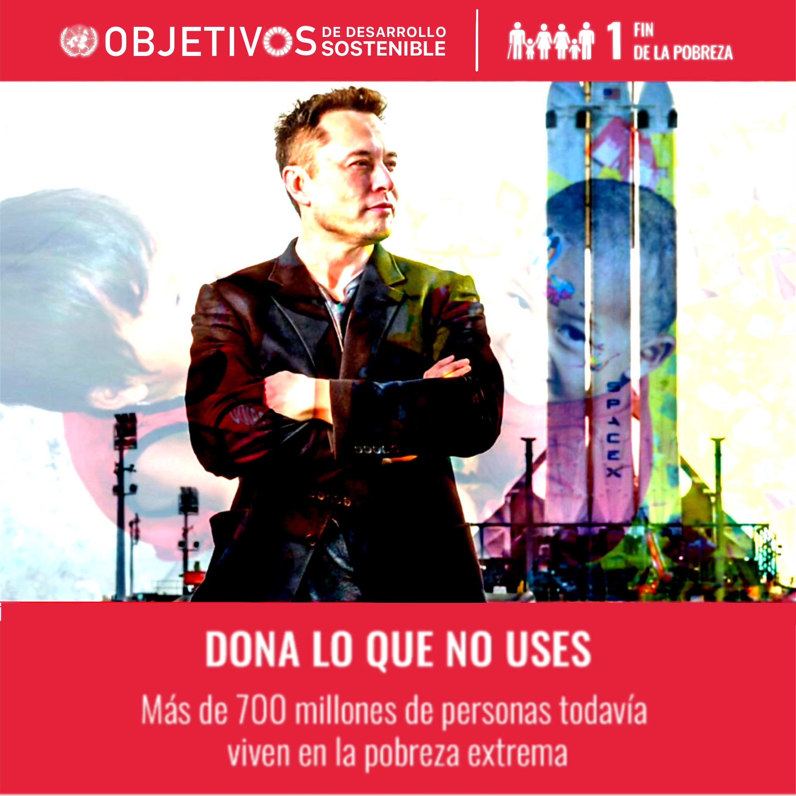
Comenzando con el mayor problema a nivel mundia: el hambre.
Como bien dice la cartela redactada y publicada en la página web oficial de la ONU, más de 700 millones de personas todavía viven en la pobreza extrema.
Se sugiere a partir de esta premisa donar aquello que no se use, colocando al groso de la sociedad como responsables, a aquellas personas que viven y trabajan para subsistir, mientras que este personaje aquí retratado, alcanzó hace pocas semanas la escandalosa cifra de 600 billones de dólares, cantidad físicamente imposible de ganar o gastar por ningun integrante de la sociedad. Concretamente, la segunda persona más rica del mundo no alcanza ni si quiera el 40 % de la riqueza acumulada por él.
Podrán entonces imaginar que quienes deben ser responsables y actuar como tales no somos la población llana, sino aquellos que controlan cantidades inimaginables de dinero. En resumen, si siguen existiendo personas que vivan en pobreza extrema es gracias a personas como ésta.
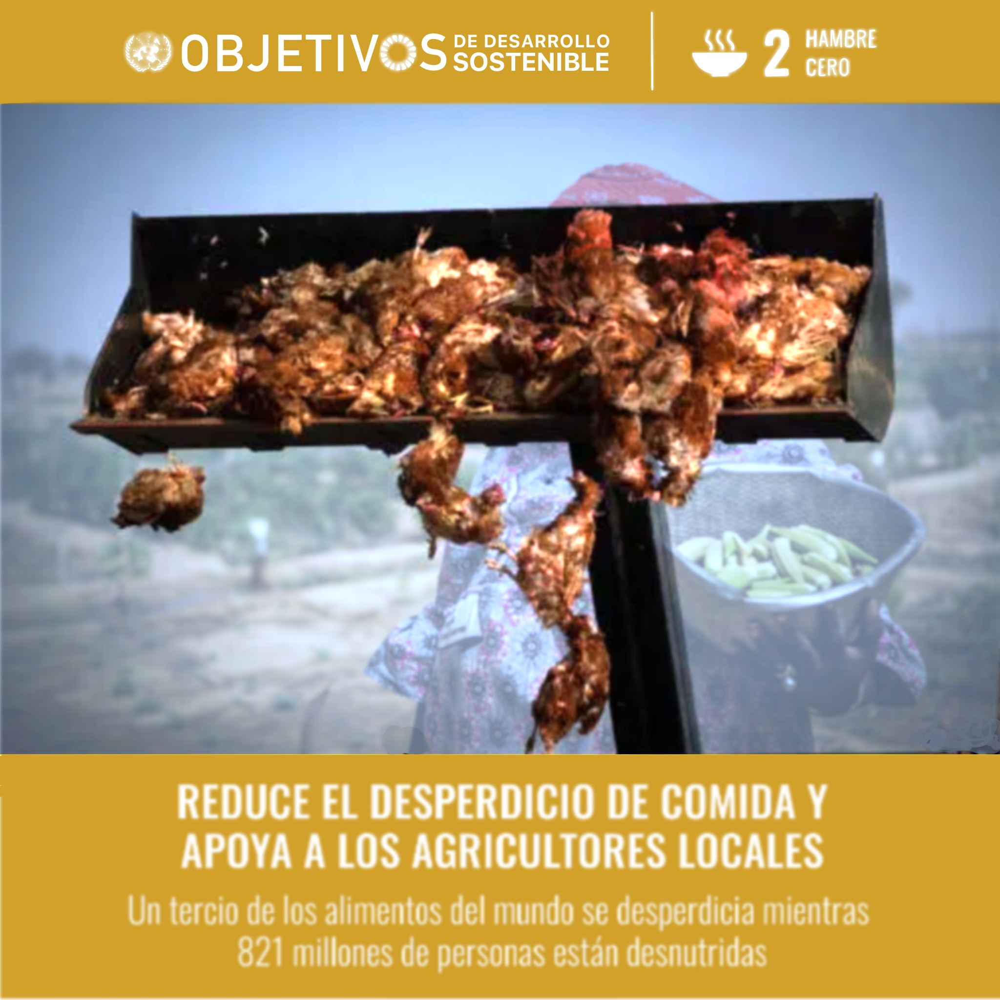
Este segundo objetivo afirma que un tercio de los alimentos del mundo se desperdicia mientras 821 millones de personas están desnutridas, dato totalmente cierto y fiable pero, ¿qué premisa propone para su realización? De nuevo, se nos coloca a nosotros, la población trabajadora como responsables, pidiendo que reduzcamos el desperdicio de comida y apoyemos a los agricultores locales, cosa que está bien y que definitivamente ayudaría a controlar en cierta medida el consumo, pero sobre todo a “sentir que hacemos algo”. Mientras tanto, la imagen aquí propuesta deriva de la problemática gripe avial vivida en nuestro país hace relativamente poco, concretamente en Íscar, Valladolid.
Desde Greenpeace se asegura que las explotaciones industriales son el entorno perfecto para la proliferación de este tipo de virus, ya que numerosos individuos genéticamente muy similares se ven obligados a vivir hacinados. Si a esto se suma que los animales se suelen trasladar a largas distancias, se da una segunda condición que facilita la propagación del virus. (D.V. - viernes, 11 de febrero de 2022)
Tomando estas premisas, se llega a la conclusión de que las macrigranjas son el modelo industrial contrario a aquello que se persigue para un desarrollo sostenible, por no hablar de la inhumanidad e apatía con la que son tratadas estos seres sin tientes, que nada tienen que ver con los derechos humanitarios ni el respecto intraespecies.
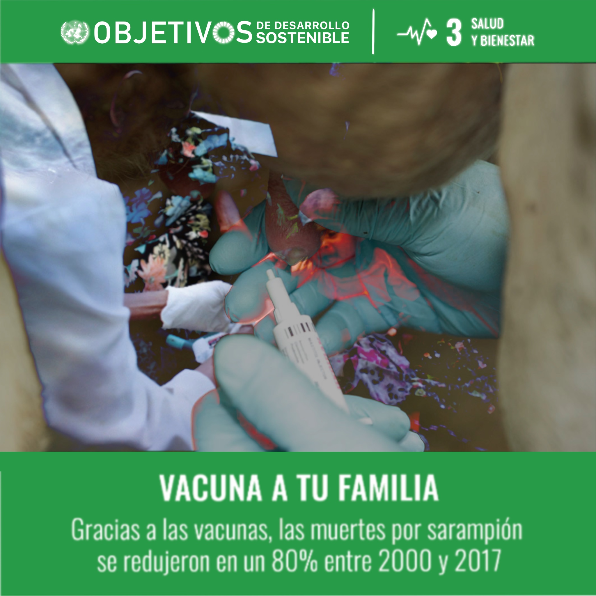
El tercer objetivo concierne a la salud y bienestar, tomando como ejemplo la falta de vacunación en poblaciones desfavorecidas. En este caso, la artista decide encaminar el objetivo hacia una realidad que concierna en calidad de salud a todos aquellos usuarios consumidores de productos de origen animal.
Como bien es sabido, el uso de antibióticos en ganadería es de uso común; bajo la premisa de prevenir enfermedades e infecciones son, en muchos casos, utilizados para promover el crecimiento. Esta práctica está prohibida por la Unión Europea y debiera seguirse la ley establecida en cada país que la sancione, sin embargo, su uso continua en muchos otros países, no necesariamente “subdesarrollados”, donde la producción y el desarrollo económico son más valiosos que la salud y bienestar, tanto de consumidores como de consumidos.
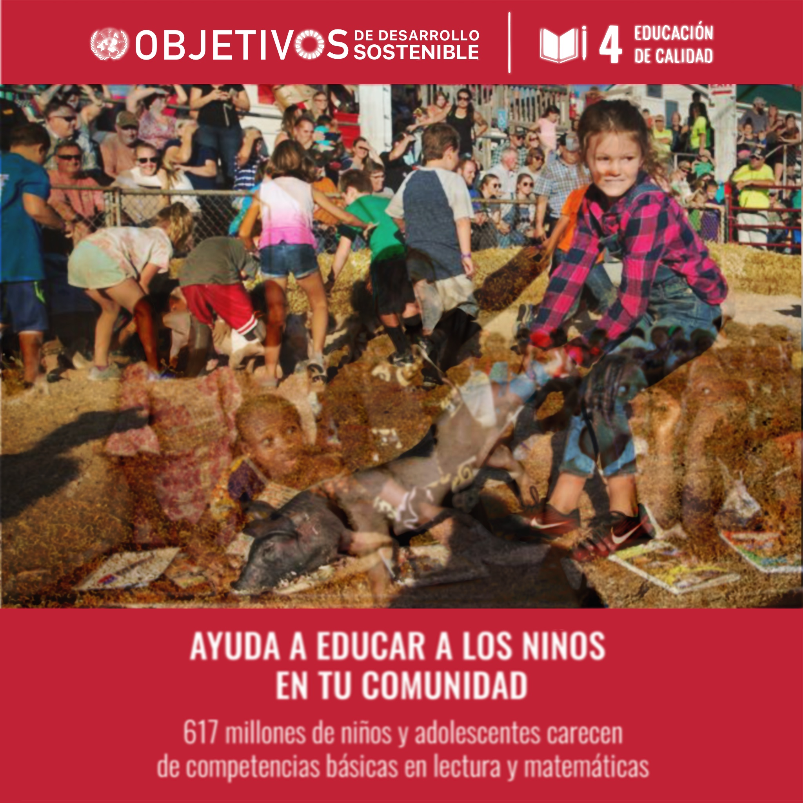
Educación de Calidad se titula este cuarto objetivo, tomando como meta a realizar la ayuda a los niños de nuestras comunidades. Esta imagen refiere a las “Pig Scramble”, ferias agrícolas y rodeos Estadounidenses donde los niños deben “jugar” a perseguir cerdos que también corresponden en edad a infantes, arrastrarlos y “cazarlos”. En definitiva, ejercer violencia y promover el disfrute de ésta y la normalización de la superioridad humana frente a otros individuos, por su puesto más débiles.
Este modelo de enseñanza justificado con tradición y diversión no es un caso aislado, pues se repite constántemente; sin ir más lejos, en nuestro País, llevando desde pequeños a los niños a las corridas de toros o enseñándolos a cazar.
Una educación de calidad se refiere al conocimiento pero sobre todo al respeto, excluir al resto de especies de estos parámetros es irracional, cruel y antinatural.
¿Qué podemos de esperar de una sociedad a la que se le ha sido impuesta desde pequeños este modelo de violencia?
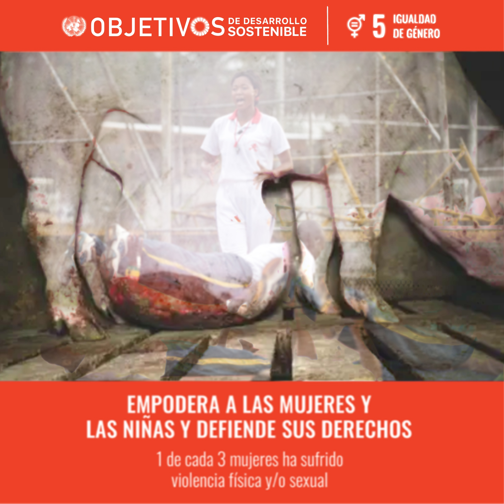
Igualdad de Género es el objetivo número 5. La mujer en el mundo aún a día de hoy sigue sufriendo discriminación, abuso sexual y asesinatos; algo insólito e inaceptable en 2025.
Defender sus derechos, tal y como bien incita esta cartela, es necesario.
Poniendo sobre la mesa la realidad, el feminismo no debe excluir al resto de especies de su lucha. En la industria ganadera, los “ejemplares” femeninos son aquellos doblemente explotados, sus cuerpos pueden ser comida, pero sobre todo, son dotadoras de vida, por lo que se les utiliza para hacer de ellos una explotación. Violadas constántemente para tener unos embarazos solitarios y dolorosos solo para que sus bebés sean robados para que los comamos.
El feminismo no es feminismo si no atiende también a estas madres de nadie.
Empodera las mujeres y las niñas y defiende sus derechos.
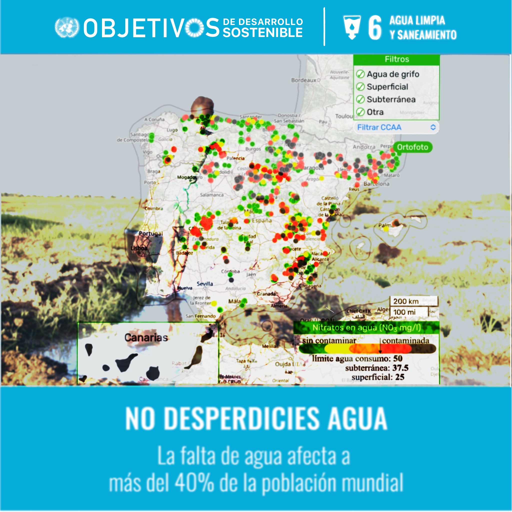
En este sexto objetivo denominado agua limpia y saneamiento se pide, nuevamente a la población llana no desperdiciar agua, pues la falta de esta afecta a más del 40% de la población mundial. Se propone en este caso la presentación de este mapa representativo de los niveles de nitrato en el agua contaminada por la industria ganadera en nuestro país, entre las cuales se incluye agua del grifo, superficial y subterránea, entre otras.
El acceso al agua potable y el saneamiento es un derecho humano, considerado como tal por Naciones Unidas desde 2010, por lo que el hecho de que se esté suministrando agua contaminada no apta para el consumo a más de doscientas mil personas supone un claro retroceso en cuanto a calidad de vida, que está afectando especialmente a municipios de la denominada “España vaciada”.(Ecologistas en Acción, 2024, párr. 4)
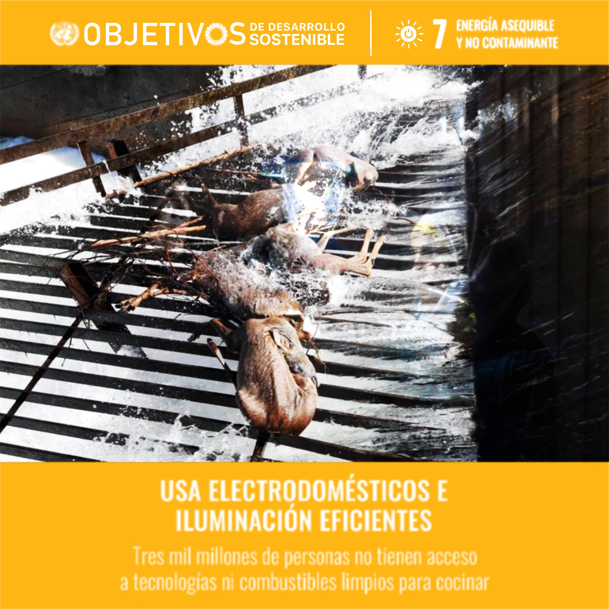
Energia Asequible y no Contaminante se refiere al séptimo objetivo. Usa electrodomésticos e iluminaciones eficientes.
La energía hidroeléctrica es una energía renovable, ya que se genera gracias al ciclo hidrológico natural, que permite un elevado nivel de eficiencia energética pudiendo alcanzar valores de rendimiento del orden del 90%, y limpia pues su producción no da lugar a contaminación alguna (Ministerio de Agricultura, Alimentación y Medio Ambiente, 2015)
La no contaminación alguna se presupone que alude al ecosistema completo, osea, flora y FAUNA; sin embargo, las presas hidráulicas en nuestra geografía provocan daños considerables a estos animales salvajes que, tal como su naturaleza indica deben cruzarlas con el fin de seguir sus trayectorias habituales, en las cuales caen y mueren.
Teniendo en cuenta todos los puntos de agua artificiales que hay distribuidos por toda la geografía peninsular, se hace imposible calcular el número de víctimas que mueren cada año ahogadas en estas estructuras, o atrapados en ellas cuando ya no disponen de agua porque se haya evaporado o vaciado, pero se estima que, contando mamíferos, reptiles, aves, invertebrados y anfibios, las muertes ascienden a millones, más que las provocadas por atropellos en vías de circulación.(Alicia Roa, 2021)
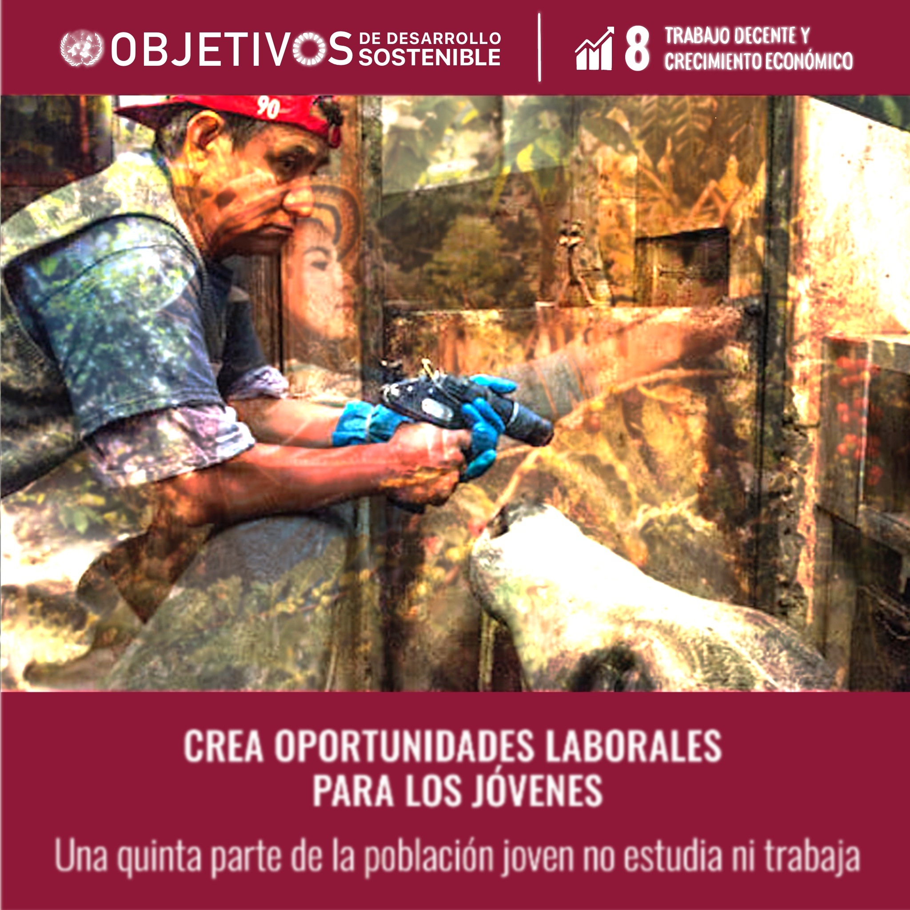
EL objetivo número 8 es trabajo decente y crecimiento económico, objetivo digno de realización pero situado cada vez más lejos del alcance general, proveniendo casi de una utopía deseada casi en totalidad por las clases media y baja sobre todo.
Una de las industria que se beneficia de esto es la cárnica, la cuál recibe numerosas ayudas, “Solo en 2020, las empresas del sector porcino recibieron más de 32 millones de euros de la Unión Europea entre ayudas directas e indirectas, según los datos del Fondo de Garantía Agraria”. (P. Pareja, 2021)
Además de recibir tal cantidad económica, tiene unas condiciones laborales pésimas, pues la mayoría de sus empleados son indocumentados, lo cuál propicia el miedo a denunciar las pésimas condiciones.
La idea de un trabajo DECENTE no puede ir de la mano con la existencia de estos empleos y mucho menos de sus condiciones.
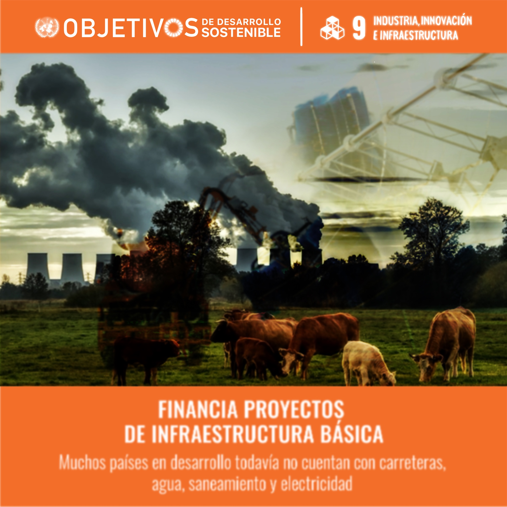
Industria, Innovación e infraestructura se refiere al noveno objetivo. En este caso tomando como ejemplo de nuevo la contaminación producida por la industria ganadera, concretamente, la láctea.
Se estima que el sector ganadero mundial ya es responsable de entre el 12 % y el 19 % del total de las emisiones de GEI causadas por el ser humano. (Greenpeace, 2025)
La palabra innovación no es siempre positiva, se deben buscar alternativas que mejoren el sector industrial, la calidad de vida y de trabajo y comenzar a tener en cuenta la contaminación que estas producen.
Lo nuevo no es siempre mejor.
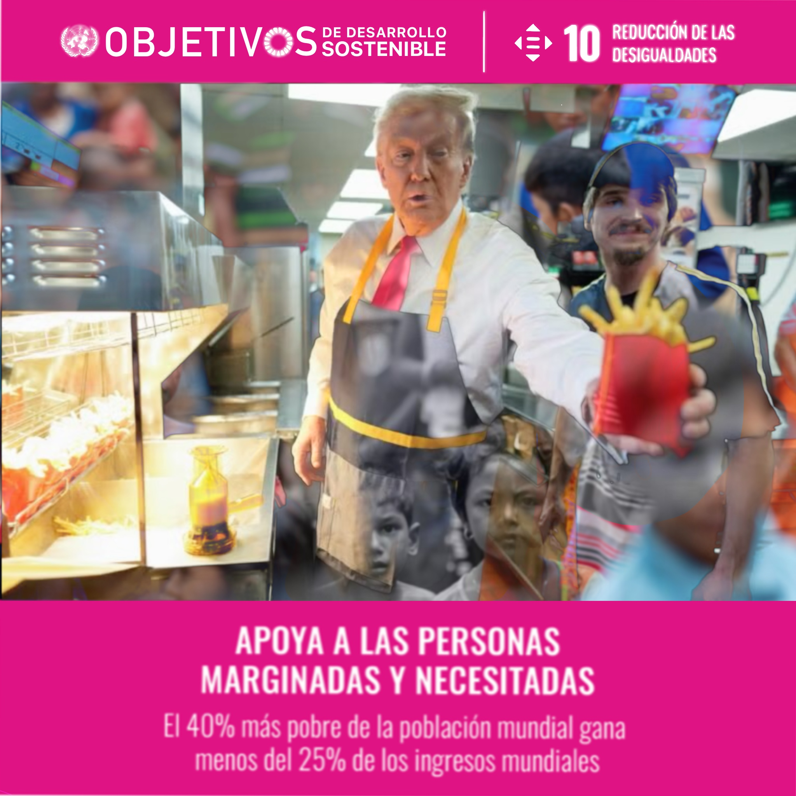
En este décimo objetivo, reducción de las desigualdades se sigue la misma tónica que en los anteriores.
El 1 % más rico ha acaparado casi dos terceras partes de la nueva riqueza, casi el doble que el 99 % restante de la humanidad (J. Romero, 2023)
¿Tenemos la población media la posibilidad de ayudar a disminuir las desigualdades?
¿O son este 1% el que tiene el poder real y la capacidad para tomar acción ante el problema pero no les interesa?
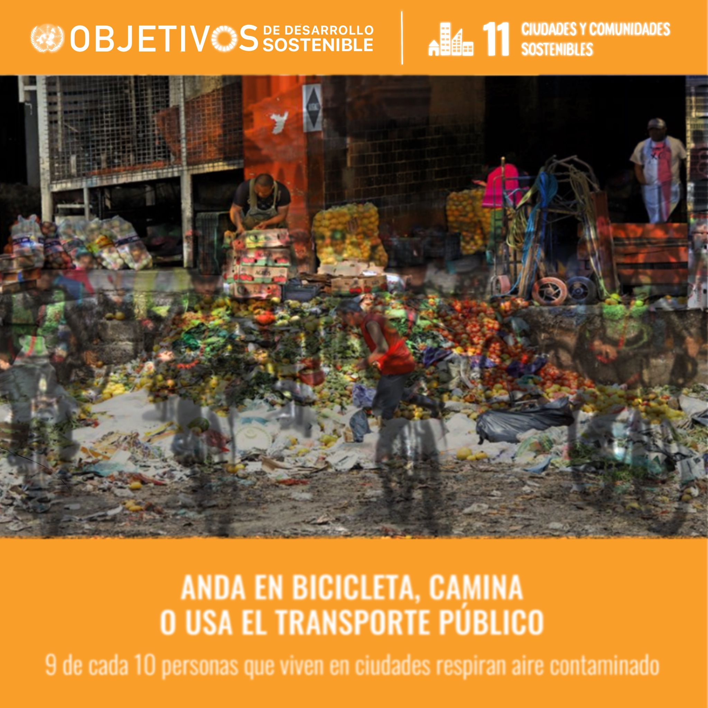
Una ciudad y comunidad sostenible es el ideal y aunque andar en bicicleta o caminar ayudan a reducir la contaminación en co2 producida por el transporte, hay otros sectores que a su vez contaminan de manera exhaustiva y quedan enmascarado por el mercado.
Mientras que un viaje en coche de Madrid a Barcelona en un coche de gasolina produce 72kg de CO2 totales, un solo kg de ternera produce 27kg de CO2.(S. Cortès Ràfols, 2024)
Lo cual quiere decir que bastan tan solo 3kg de ternera para igualar la contaminación producida por un viaje en carretera de 615km, además de todo el desperdicio de alimento ocasionado por el modelo de consumo que tenemos.
Lo cual nos lleva a la conclusión de que para disminuir nuestro impacto medioambiental debemos tener en cuenta más aspectos a parte del transporte, cambiando quizás la manera que tenemos de consumir.
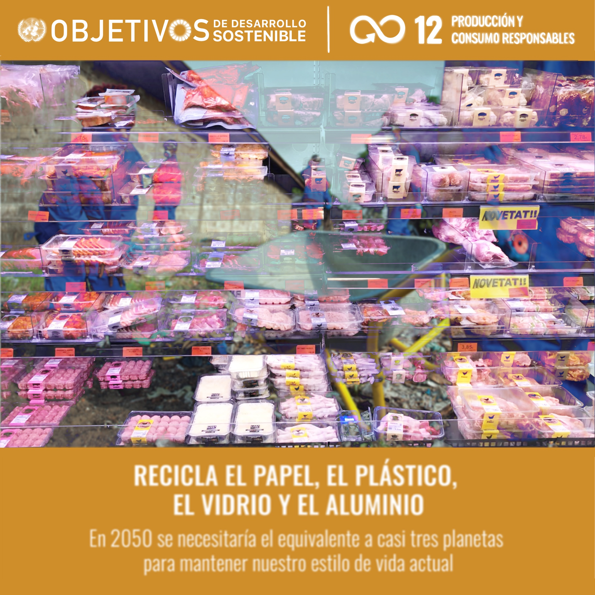
Este objetivo, tiene mucho que ver con el anterior, producción y consumo responsable.
“En España,[…] el consumo de Alimentos Ultra Procesados se ha triplicado en dos décadas” (J. Corbella, 2025)
Como bien expone el subtítulo de este objetivo, en 2050 necesitaríamos el equivalente a tres planetas para mantener nuestro estilo de vida actual. Reciclar, como solución a llevar a cabo.
La cuestión es la siguiente, la industria alimentaria es responsable de una cantidad importante de plásticos, vidrios etc que si, se pueden reciclar; encontrados sobre todo en los AUP, que además fomentan la aparición de enfermedades crónicas, además de resultar atractivos para niños y adolescentes resultan una buena solución en adultos con problemas económicos o de movilidad; entonces, ¿por qué se pide al ciudadano que recicle cuando quienes tienen el verdadero poder de decisión son otros?
Está claro por qué se insta a los gobiernos, a los responsables de las políticas y a las partes interesadas a atenuar la industria de los alimentos no transgénicos antes de que crezca hasta constituir una proporción aún mayor de la cuota alimentaria mundial.(Longevity, 2025)
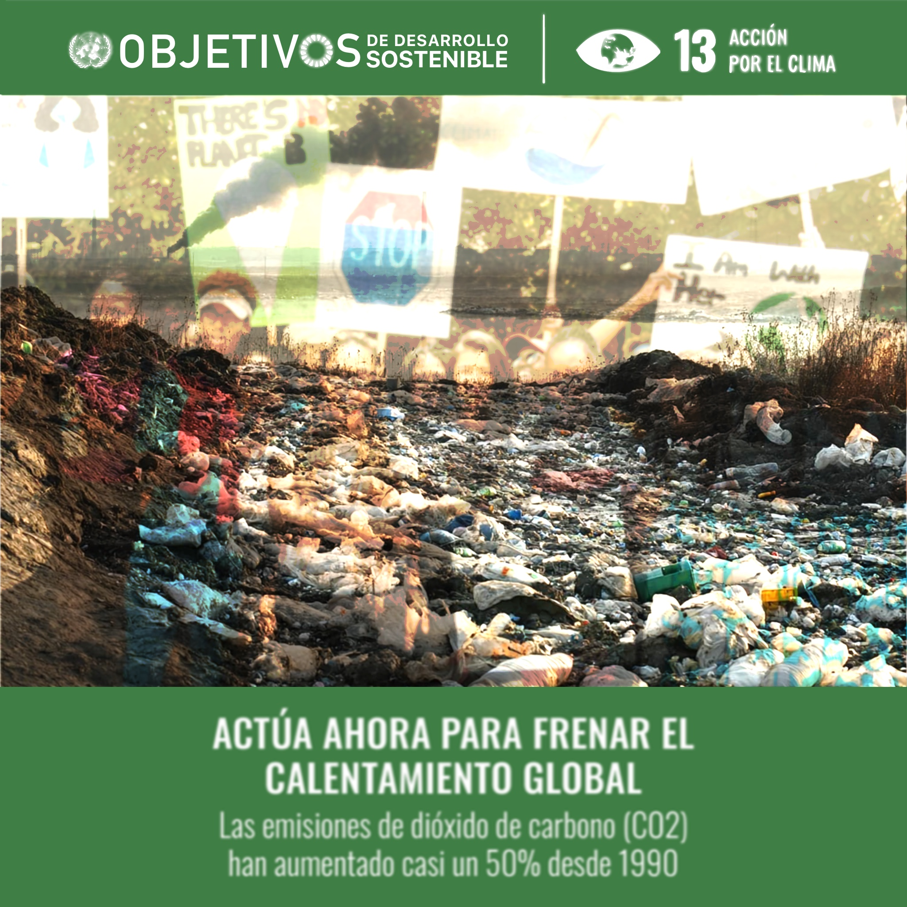
ACCIÓN POR EL CLIMA: ACTÚA AHORA PARA FRENAR EL CALENTAMIENTO GLOBLAl
En el Mediterráneo, los registros oceanográficos y las observaciones desde satélite evidencian una intensificación del calentamiento en las últimas décadas.Los datos muestran un calentamiento global de +1.43ºC en la fachada mediterránea frente a +0.98ºC para la zona atlántica, con patrones estacionales similares. (M.J. López, 2025)
Estos datos obtenidos de la Aemet nos dan algunas pistas de que no se pueda deshacer.
De nuevo encontramos la misma cuestión que en todos estos objetivos, la imágen aquí presentada muestra un grupo de personas manifestándose, sugieriendo que esa es la solución pero, ¿contra quién se están manifestando?
Sería más lógico mostrar los verdaderos responsables, las industrias, aquellas personas que manejan el mayor capital y sobre todo, los gobiernos e instituciones públicas que no ponen remedio ni control ante ésto.
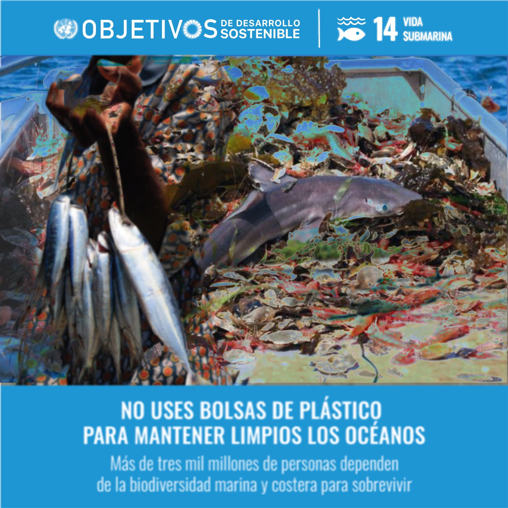
Vida Submarina es el objetivo número catorce.
No usar bolsas de plástico para mantener limpios los océanos poarece una solución sencilla, al alcance de cualquiera y haciendo responsable a unos individuos que se sentirán autorrealizados con una acción minúscula cuando el problema es tan grande que se escapa del alcance de aquel individuo que va al supermercado y compra una bolsa de plástico.
Mientras que sigan existiendo leyes que permitan vender los productos envasados completamente en plásticos, mientras que se siga pescando con métodos dañinos para el ecosistema como la pesca de arrastre, mientras que se sigan promocionando las pajitas de papel para salvar a las tortugas y se siga permitiendo la contaminación del mar con residuos no avanzaremos.
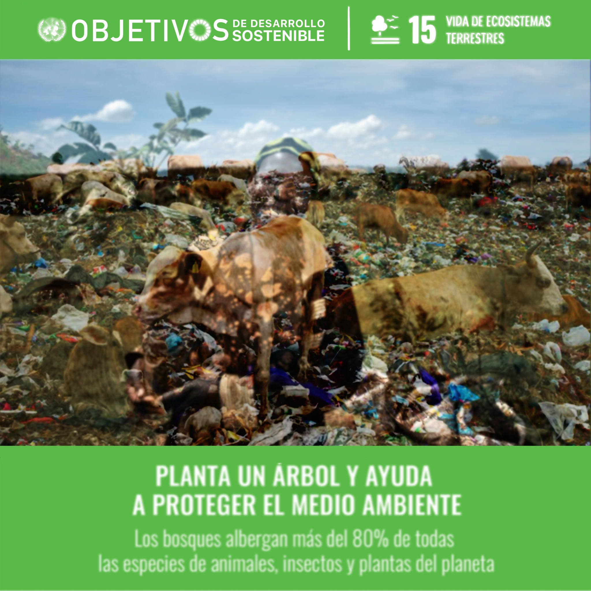
Plantar un árbol para ayudar a proteger el medio ambiente suena precioso, inspirador, tranquilizador.
Mientras una persona altruista y concienciada con el medio ambiente panta un árbol que tardará años en crecer, el Amazonas sufre una deforestación masiva.
“Según el Ideam en 2024 se deforestaron 113.608 hectáreas en Colombia, el 68% en la Amazonía. Un aumento del 43% en el país y del 74% solo en esa región. La ganadería fue la principal causa” (La silla Vacía, 2025)
La ganadería es una de las principales causas de desforestación mundial y de esto es culpable el modelo de consumo excesivo de carne y derivados que llevamos a cabo como sociedad.
Si se utilizarán esos terrenos para cultivar alimentos para el consumo directo de los humanos como frutas, verduras y hortalizas, no se necesitarían talar árboles, pues se ocuparía muchísimo menos terreno, el pulmón verde crecería y ayudaría a contrarrestar la contaminación producida por otras industrias y la más importante: habría comida suficiente para alimentar a todo el planeta.
Si el medio ambiente te preocupa, no propicies con tu dinero el desarrollo de industrias que lo están destruyendo.
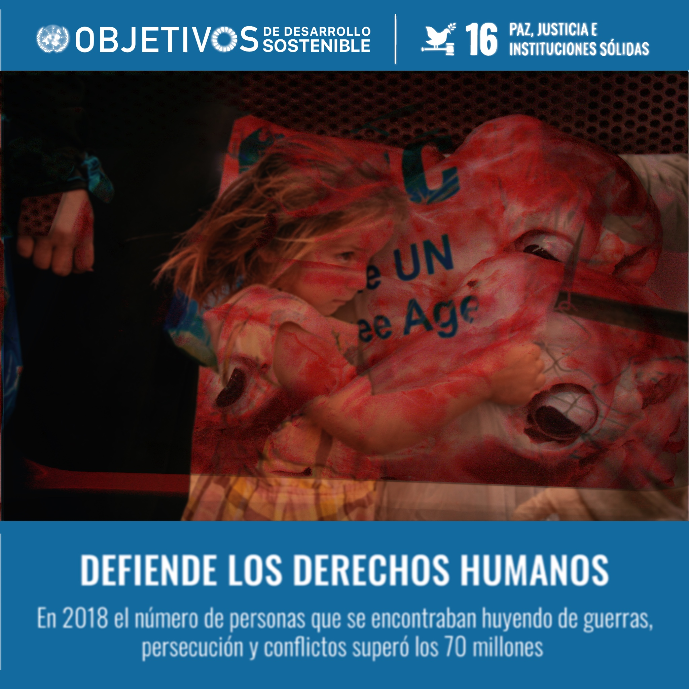
Paz, justicia e instituciones sólidas es el penúltimo de los objetivos, con la premisa de defender los derechos humanos.
Se propone entonces para la reflexión si somos los humanos los únicos que merecemos tener derechos.
La Declaración de Cambridge sobre la consciencia destaca que no es necesario poseer neocórtex para ser considerado como sintiente, lo que ha llevado a analizar esta capacidad, inclusive, en muchos invertebrados. ¿Los animales sienten? Invariablemente la respuesta es sí
La visión antropocéntrica del ser humano ha llevado a la explotación de animales para satisfacer sus necesidades, tanto primarias como secundarias, sin preocuparse por su sufrimiento o bienestar. (I. Maldonado, 2023)
Debemos volver a la sinceridad de sentimientos a la que responden los niños para tratar al resto de animales desde el respeto y la empatía.
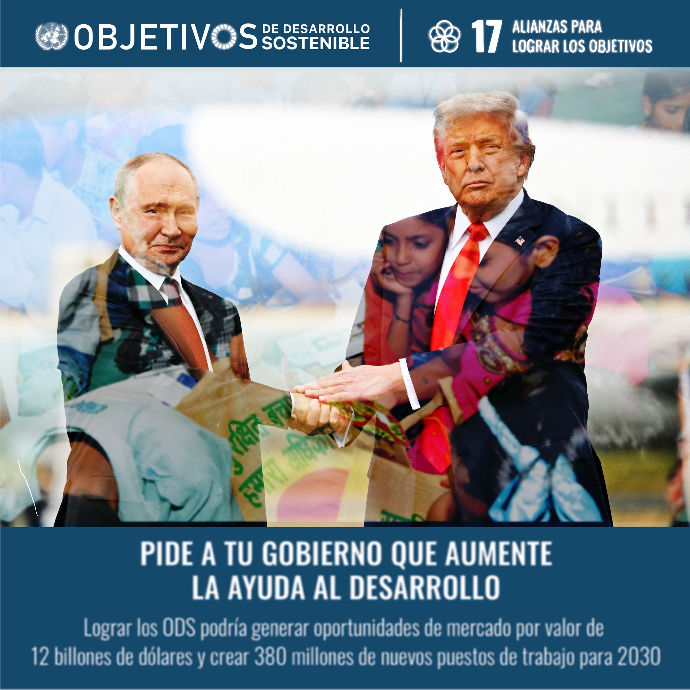
Alianzas para lograr los objetivos es el último de estos diecisiete objetivos.
Estas alianzas se están indudablemente realizando, la cuestión es cuáles son los objetivos para los que se alían.
Tal como se muestra bajo la imagen, lograr los ODS podría general oportunidades de mercado por valor de 12 billones de dólares y crear 380 millones de nuevos puestos de trabajo para 2030.
Estos 17 ODS se plantearon en 2017 para el año 2030.
Quedan menos de 5 años para que llegue esta fecha y lejos de conseguirlos, hemos retrocedido en más de uno.
Se cuestiona aquí el grado de competencia que han demostrado los líderes mundiales y si, en todo caso, tienen o no la intención de llevar a cabo los objetivos o tienen, en cambio, otros intereses.